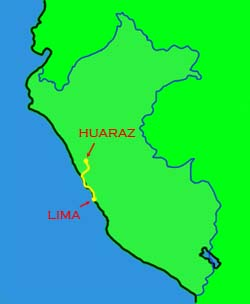
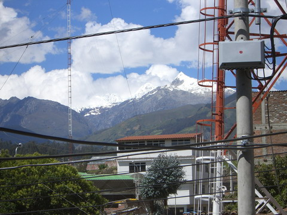
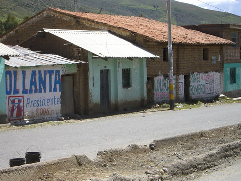
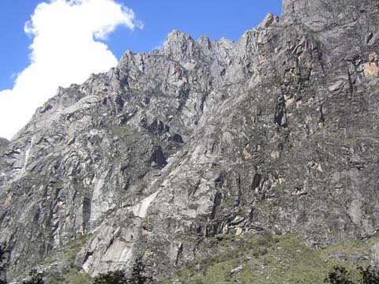
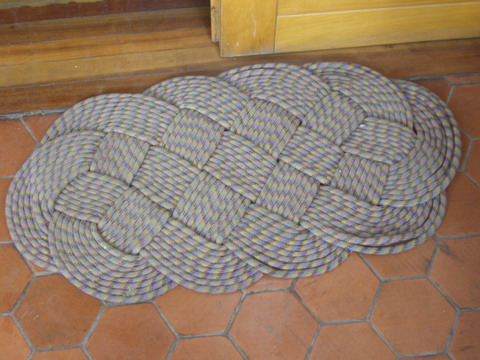
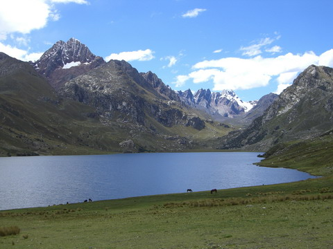
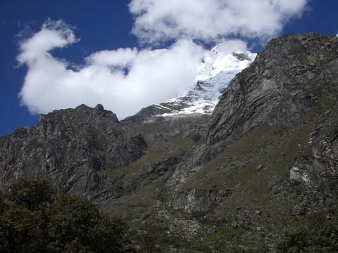
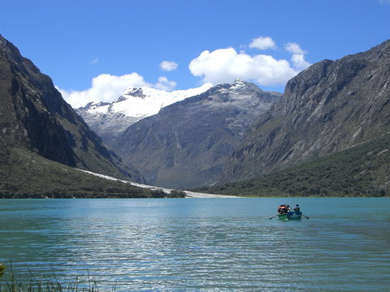
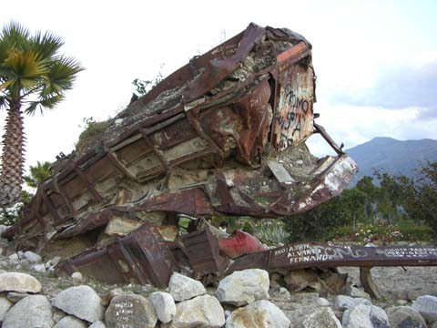
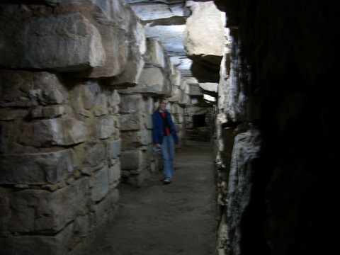

peru

huaraz

eight hours on the bus from lima and you're in downtown huaraz. nice views, in the distance at least..

as i mentioned earlier the elections were on and here, as everywhere, most walls had political graffiti.

huaraz is surrounded by massive mountains with, droooool, endless amazing climbing spots. to get a feel for the scale zoom in on these big trees. we drove through a valley that looked like this for hours.

huaraz is definitely a big climbing spot. check out the door mat to the cafe down the road from us! (for those not in the know that's a climbing rope)

another amazing view!

this is peru's highest mountain, the mighty huascaran. from here it's another 3000m to go to summit, i'll be back by lunch (not!). in another attempt to understand scale in these lo res pictures these dots are full sized trees on the way to the top.

the blue waters of laguna llanganuco under huascaran
it's not all peaches and cream though. in 1970 a huge earthquake broke off a "chunk" of 15 million cubic metres of dirt, snow and ice from the side of huascaran (that's a cube about 250m on each side). the town of yungay was 14 kilometres away and it just took 4 minutes for this avalanche to hit it. about 100 of 20,000 people survived. this pic is the remains of a bus.

chivay has some remarkable town ruins all of which are underground. a complex series of small ventilation tunnels keep the air fresh. these ruins, 900BC, are much older than machu picchu (1400AD)
index